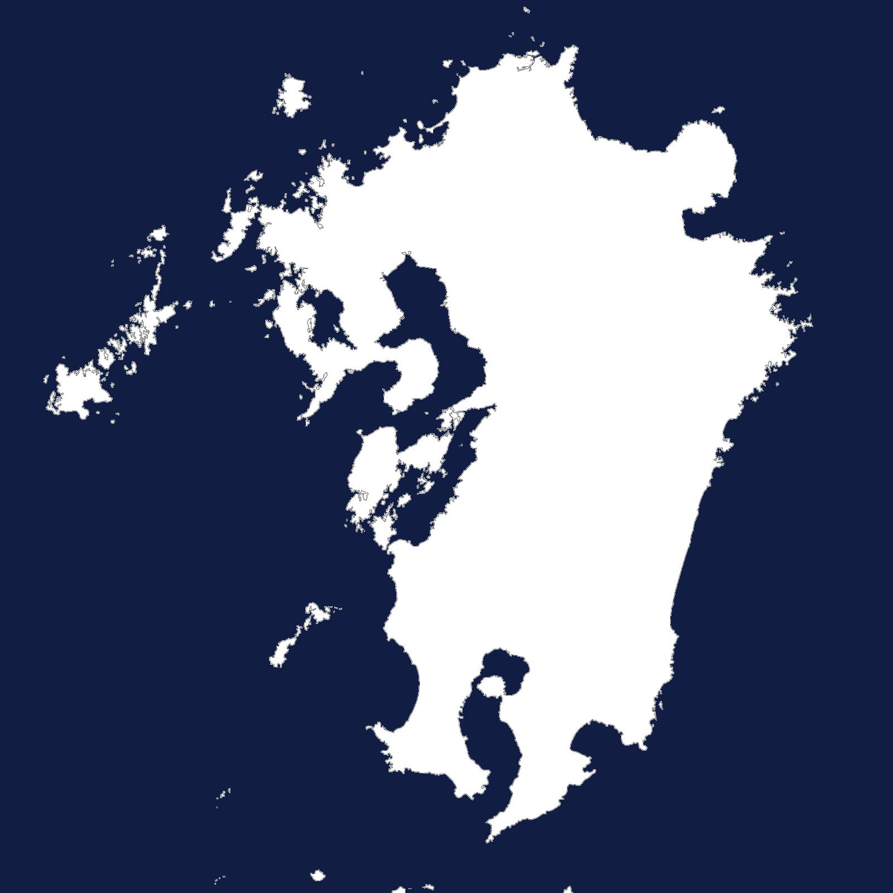
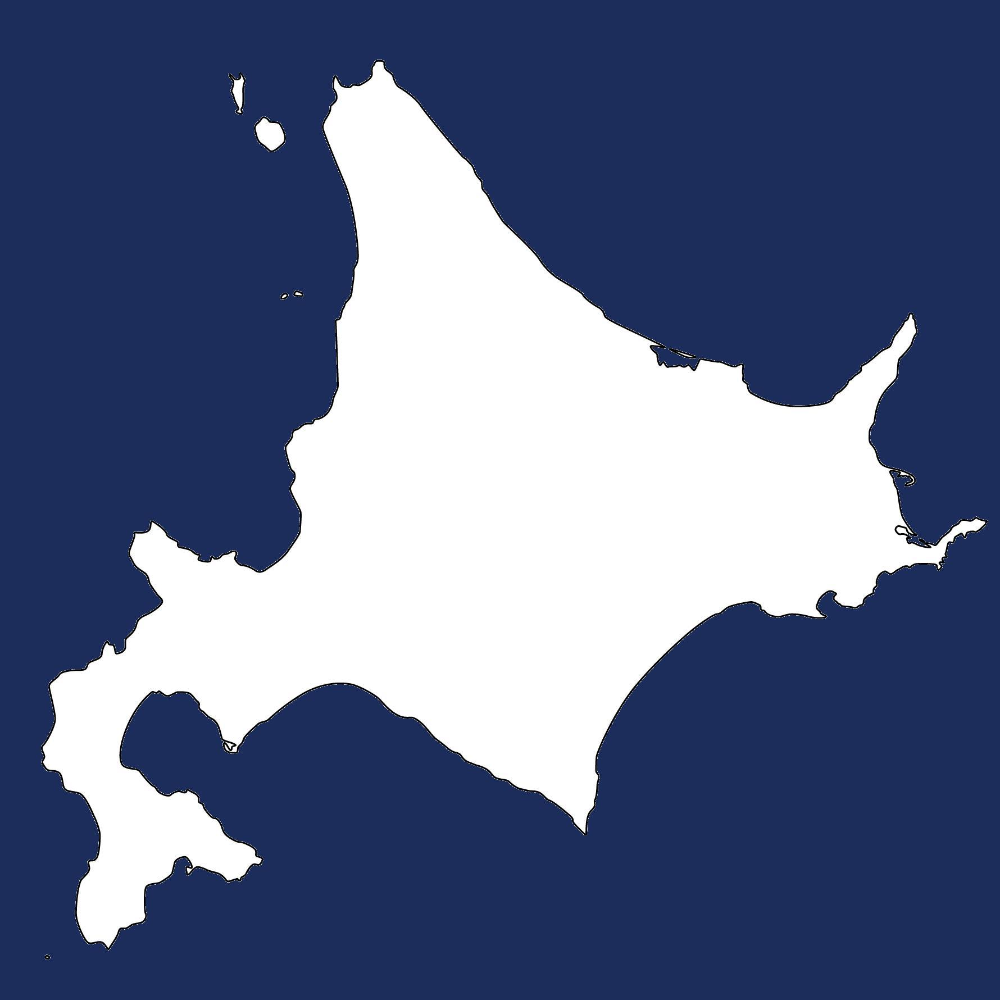
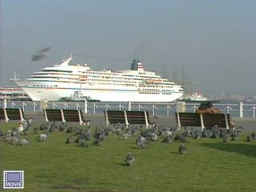
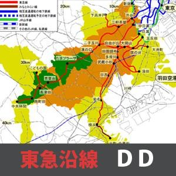
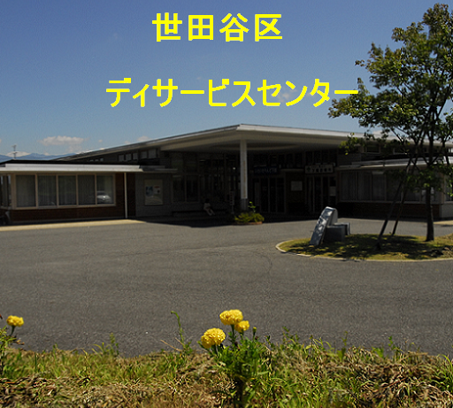
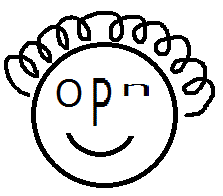
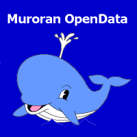
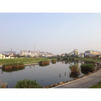

データセット部門
応募作品一覧
| エントリー番号 | 作品の名称 | 応募者 | 応募概要 | エントリー情報 | |
|---|---|---|---|---|---|
| d001 | 京都が出てくる本のデータ | 是住久美子 | 京都の公共図書館で働く図書館司書が作成した、京都が出てくる小説やマンガ・ライトノベル等のデータです。作品に出てくる京都の位置データに加え、おススメ度や内容紹介等が含まれています。 |  | |
| d002 | 図書館員が調べた京都のギモン | 是住久美子 | 国立国会図書館のレファレンス協同データベースに登録された、全国の図書館員が調べた京都のギモンの数々です。地理情報や関連する項目のDBpediaのURIが含まれています。 | | |
| d003 | AEDオープンデータプラットフォーム | 初音玲 | AEDオープンデータプラットフォームは、日本全国のAED位置情報を検索するAPIです。
都道府県単位一覧、市町村区単位一覧、直近AED検索、周辺AED一覧などのAPIを用意しています。 | | |
| d004 | 加古川市の避難所 | 人材育成 | 加古川市の避難所の住所・名前・緯度・経度の情報です |  | |
| d005 | 淡路島の玉葱 | 奥村 健也 | 淡路島の玉葱販売店の場所・値段・量の情報 | | |
| d006 | かこバス 東加古川ルート | 蓬莱 大流(人材育成) | 加古川市のかこバスの停留所の位置情報です。 | | |
| d007 | 伝統的工芸品/Traditional Crafts of Japan | 中山 圭太郎 | 「伝統的工芸品産業 の振興に関する法律」（略称：伝産法）に基づいて経済産業大臣により指定された日本の伝統工芸品の一覧です。 |  | |
| d008 | 離島/Remote Islands of Japan | 中山 圭太郎 | 「離島振興法」において、離島振興対策実施地域に指定されている離島の一覧です。離島の地理的および自然的特性を生かした振興を図ることを目的としています。 | | |
| d009 | 東急電鉄toks店舗一覧/toks’s store list | 中山 圭太郎 | 東急電鉄の駅構内にある売店「toks(トークス)」とコンビニ「LAWSON+toks」の店舗一覧です。 | | |
| d010 | 東急電鉄の駅/TOKYU CORPORATION Stations | 中山 圭太郎 | 東京急行電鉄株式会社(TOKYU CORPORATION)の駅一覧です。 | | |
|  | d011 | 福岡証券取引所単独上場銘柄/Listed stocks of Fukuoka Stock Exchange | 中山 圭太郎 | 福岡証券取引所に単独で上場している企業(銘柄)の一覧です。 | |
|  | d012 | 札幌証券取引所単独上場銘柄/Listed stocks of Sapporo Stock Exchange | 中山 圭太郎 | 札幌証券取引所に単独で上場している企業(銘柄)の一覧です。 | |
| d013 | なでしこ銘柄/Stocks of Nadeshiko Brand | 中山 圭太郎 | なでしこ銘柄に選定された企業(銘柄)の一覧です。 | | |
| d014 | 訪日外国人旅行者受入のための戦略拠点/Regional base for inbound | 中山 圭太郎 | 観光庁は観光地域を中心に、訪日外国人旅行者の受入環境整備のための戦略拠点と地方拠点を指定しています。日本国内の戦略拠点と地方拠点(49拠点)を汎用的に用いられるようデータセットにまとめたものです。 | | |
| d015 | 栃木県救急病院・診療所名簿 | 篠崎晃 | 栃木県内における救急病院と救急診療所の名簿 |  | |
| d016 | 暮らし向きを表す漢字一文字/The Kanji representing the state of life | 中山 圭太郎 | 東急沿線にお住まいの方のアンケート「暮らし向きを表す漢字一文字」調査結果、2011年10月～2014年10月までのアンケート調査結果(全13回)の出現回数 | | |
| d017 | プラネタリウムLOD | 加藤敦丈 | 日本のプラネタリウムに関連する情報です。 | | |
| d018 | 動物園LOD | 加藤敦丈 | 動物園関連施設、および、その飼育情報です。 | | |
| d019 | 薬膳LOD | 榎本 真美,山口 敦子,Melissa Auclaire,中山 圭太郎 | 身近な食材の漢方上の分類をデータセットにまとめました。 | | |
| d020 | レシピRDF | 榎本 真美,山口 敦子,Melissa Auclaire,中山 圭太郎 | レシピのRDFです。鯖江特産吉川なすのレシピを引用して、レシピの情報を機械可読データとして整理したものです。フォーマットは、横手市にこにこレシピ(2013-d019)を参考にして作成しました。 | | |
| d021 | 東急沿線イベント情報データ | 中山 圭太郎 | 東急沿線のイベント情報です。2013年1月～2014年10月末日まで『とくらく』に掲載されたイベントデータです。 | | |
| d022 | 地域資源LOD | 榎本 真美,山口 敦子,Melissa Auclaire,中山 圭太郎 | 地方自治体の地域資源をデータセットにまとめました。 | | |
| d023 | 日本のオープンデータ都市データ | 株式会社jig.jp | 日本のオープンデータ都市データ | | |
|  | d024 | 神奈川県の名所データ | 鴨川 威 | 神奈川県観光名所31カ所の名称、概要、静止画像、動画像、緯度経度情報、各種メタデータをLOD化し公開する。LinkData基本サービスによりその観光スポット概要、静止画と動画像を視ることができる。 | |
| d025 | 横浜市鶴見区選挙区データ | Team inflatier | 選挙の投票率が少しでも上がるために作りました。 まずは、自分の高校がある鶴見区のデータです。 | | |
| d026 | 全菌類のデータベース「大菌輪」LOD（識別形質） | 中島淳志 | 菌類（きのこ、カビ、酵母）は毎年数千種もの新種が発表されている、極めて多様性に富んだ生物です。最新の分類学の論文をスクリーニングし、識別形質を集積していくことで、その全貌の把握を目指します。 | | |
| d027 | 全菌類のデータベース「大菌輪」LOD（タイプロカリティ） | 中島淳志 | 最新の菌類分類学の論文から、タイプロカリティ（≒新種が発見された場所）のデータを収集し、まとめたデータセットです。 | | |
| d028 | 明石高専の学生食堂メニュー | 中田季利、新井イスマイル | 明石高専の学生食堂のメニューをXMLファイルでオープンデータ化しました。 | | |
| d029 | ゴミの分別表(横浜市) | 加茂 聡 | 横浜市のゴミの分別表 | | |
| d030 | ゴミの分別表(水戸市) | 加茂 聡 | 水戸市(内原地区以外)のゴミの分別表 | | |
| d031 | ゴミの分別表(会津若松市) | 加茂 聡 | 会津若松市のゴミの分別表 | | |
| d032 | 明石焼(玉子焼)部会加盟店一覧 | 重冨絵梨奈 | 一般社団法人明石観光協会の明石焼(玉子焼)部会加盟店一覧をCSVファイルでオープンデータ化しました。 | | |
| d033 | Police Crime Report | Bo Hu, Aisha Naseer | Police crime report of Hampshire County in UK from 12/2010 till 09/2014 | | |
| d034 | 夜景スポット一覧 | 松尾 朋宏 | 六甲山・摩耶山からの1000万ドルの夜景スポットや都心・ウォーターフロントなどの神戸らしい夜景スポットの位置情報を提供しています。 | | |
| d035 | ロケ地情報一覧 | 松尾 朋宏 | 神戸フィルムオフィスが支援し、神戸市で撮影された映画のロケ地情報を、エリア別・作品別で提供しています。 | | |
| d036 | 阪神・淡路大震災「1.17の記録」 | 松尾 朋宏 | 阪神・淡路大震災の発災直後や復旧・復興の様子など約1,000枚の記録写真の画像と画像情報を提供しています。 | | |
| d037 | ロンドンオリンピック 入賞者一覧（個人競技） | 新井 晶也 | ロンドンオリンピック入賞者（個人種目）の入賞者一覧 | | |
| d038 | UK public service data | Bo Hu, Aisha Naseer | UK public libraries, recreation centres, and nurseries | | |
| d039 | UK healthcare services | Bo Hu, Aisha Naseer | Dataset contains UK public and private health care units and clinical centres. | | |
| d040 | 名古屋市バス停情報データ | 大野貴之, 年岡晃一 | 名古屋市バス停情報データ | | |
| d041 | 渋谷駅バリアフリー調査データ（ポイント） | オープンデータで通勤問題解決プロジェクト（仮称） | 渋谷駅の京王井の頭線改札口、東京メトロ銀座線改札口、JR玉川口改札口の間の移動経路における、バリアフリー状況を現地調査にて収集したデータセット（ポイント） | | |
| d042 | 渋谷駅バリアフリー調査データ（ウェイ） | オープンデータで通勤問題解決プロジェクト（仮称） | 渋谷駅の京王井の頭線改札口、東京メトロ銀座線改札口、JR玉川口改札口の間の移動経路における、バリアフリー状況を現地調査にて収集したデータセット（ウェイ） | | |
| d043 | 東急電鉄の歴史 | 中山 圭太郎 | 東京急行電鉄株式会社(TOKYU CORPORATION)の駅の歴史がわかる時系列データセットです。 | | |
| d044 | 東急沿線パーソントリップ調査 | 中山 圭太郎 | 2008年に実施されたパーソントリップ調査より、東急電鉄の駅周辺の情報にまとめたデータセットです。 | | |
| d045 | 名古屋駅地下街店舗LOD | 一円 真治，白松 俊，野原 健美 | 名古屋駅地下街にある店舗情報のLODです．店舗情報には，店名やジャンル等の基本的な情報に加えて，メニュー情報，バリアフリー情報が含まれています．名古屋駅内店舗の利便性向上を目指しています． | | |
|  | d046 | 東急線沿線の「街の兆し」を測るためのデータカタログ | 庄司昌彦 | 東急線沿線の「街の兆し」を測る切り口と、それを実際に計測することに有効と思われる沿線自治体（世田谷区、川崎市、横浜市）・国・民間が開示しているデータを当該自治体ごとに整理したカタログ | |
|  | d047 | 世田谷 ディサービスセンター | 古川純子 | 家族の中で、ディサービスセンターを利用する必要が出来た時に、利用者居住宅の近隣沿線・最寄り駅から、幾つかのディサービスセンターを、ビジュアライズすることが可能です。 | |
| d048 | 精油の効果 | 舛村 康成 | アロマテラピーのデータセットです。
主な精油の効果などを、 体調が悪いときに役に立つようにまとめてみました。 より多くの人の役に立つと嬉しいです。 | | |
| d049 | 長崎県長崎市における過去30年間の天気情報 | 磯野祐太 | 気象庁が公開している天気データ30年分（csv形式)を独自にLOD化しました。私自身が長崎県に住んでいるので、長崎県長崎市のデータです。このデータを利用した面白い取り組みも行ってますのでご覧ください。 | | |
| d050 | アニメの聖地でTwitterにてつぶやかれた情報のデータセット | 磯野祐太 | 開発者がLODを準備するのも良いですが、このデータセットはTwitterユーザーがつぶやいたつぶやきを自動的にLODデータに変換したものです。自己増殖的にLODデータが増えていく、そんな仕組みです。 | | |
| d051 | ビブリオバトルLOD | 常川真央 | ビブリオバトルLODは、書評ゲームの一種であるビブリオバトルの開催情報の一部をLinked Dataとして記述したデータセットです。 | | |
| d052 | 川崎マチフォト - Kawasaki Photo Town | 川崎 International Open Data Day 2014 参加メンバー | 川崎 International Open Data Day 2014にて、参加者が町を歩きながら撮影した写真をオープンデータ化したものです。 | | |
| d053 | 横浜市選挙投票率（平成15年~平成25年） | Team inflatier（猪野 湧斗、川上 拓真、舛村 康成） | 横浜市の平成15年から25年までの市議会議員選挙、市長選挙の区ごと、市全体の投票率です。 | | |
| d054 | 衆議院提出議案 | 岩月憲一 | 衆議院に提出された議案の一覧。提出した議員名、または内閣提出の議案については、各省庁の概要へのリンクを掲載している。 | | |
| d055 | 動画・錦市場 | 高木治夫 | 京都の錦市場を動画でマッピングしました。 |  | |
| d056 | 日本全国版pgrouting用データ | 石井学 | pgrouting用のデータ、日本全国分 | | |
| d057 | 国民性の国別比較（環太平洋価値観国際比較調査） | 「QUAR」製作委員会(和田康宏 他） | 統計数理研究所のサイトで公開されている
「環太平洋価値観国際比較調査」 (http://www.ism.ac.jp/~yoshino/ap/index.html) をLODの形式に加工しました。 | | |
| d058 | 北海道室蘭市広報紙オープンデータ | 青木 和人 | 北海道室蘭市がオープンデータ公開している広報誌データから、行政イベントの日時、場所、内容、参加費、注意事項などの項目分け、会場住所の位置情報を付与して利用しやすくした行政イベントデータです。 | | |
| d059 | 大阪府大阪市都島区広報紙オープンデータ | 青木 和人 | 大阪府大阪市都島区がオープンデータ公開している広報誌データから、行政イベントの日時、場所、内容、参加費、注意事項などの項目分け、会場住所の位置情報を付与して利用しやすくした行政イベントデータです。 | | |
|  | d060 | 信州上田なんでも体験団－温泉・宿泊編－ | Team Opendata | 温泉地でもあり真田氏などの歴史も持ち、数多くのロケ地にも選ばれた長野県上田市に観光に訪れようとする人が参考にできるよう温泉・宿泊施設のデータを集めました。 | |
| d061 | ウェルカム玄海町動画マッピング | 宮﨑伸市 | 佐賀県東松浦郡玄海町を映像で紹介しています。 | | |
| d062 | 旬の食材 | 榎本 真美,山口 敦子,Melissa Auclaire,中山 圭太郎 | 食材の旬をデータセットにまとめました。 | | |
| d063 | 免許LOD（茨城版） | 安田つくし, 縣正樹 | 茨城県内の大学で取得できる免許・資格の情報をLOD化しました。 | | |
| d064 | 京都伏見の酒蔵・酒データセット | 青木 和人・山下 諒・島田 さやか・Natsumi Fukuji | 「日本三大酒どころ」である京都市伏見地域の日本酒、酒蔵データです。日本酒銘柄や酒蔵の住所だけでなく、酒蔵見学の可否や試飲の可否など酒蔵めぐりをするためのとっておきの情報が登録してあります。 | | |
| d065 | 信州上田なんでも体験団－イベント・祭り編－ | Team Opendata | 長野県上田市で開催されている祭り・イベントを集めました。全国的にも有名なものや歴史的に価値のあるものもあります。老若男女すべてが楽しめます。 | | |
| d066 | 信州上田なんでも体験団－釣りスポット編－ | Team Opendata | 長野県上田の釣り情報です。釣り場の名前や釣れる魚などをまとめたデータになっています。 | | |
| d067 | 信州上田なんでも体験団－映画ロケ地編－ | Team Opendata | 日本のハリウッド・信州上田”。長野県上田市は昔から映画のロケ地で有名です。どんな監督のどんな映画が、市内で撮影されたかがわかります。 | | |
| d068 | 信州上田なんでも体験団－アウトドア編－ | Team Opendata | 長野県上田市とその近郊のキャンプ場と登山におすすめの山をまとめたデータです。どんなアウトドア活動に向いているかがわかります。 | | |
| d069 | 北海道室蘭市広報紙（マシンリーダブル版） | Code for IBURI | 北海道室蘭市広報紙を機械可読に整理したものです。 | | |
| d070 | When.exe Ruby版による日本暦注データセット | 須賀 隆 | When.exe Ruby版による西暦595年～1872年の期間の日本暦日と暦注のデータセットです。 |  | |
| d071 | 北海道室蘭市選挙区データ | Code for IBURI | 北海道室蘭市選挙区データです。 | | |
| d072 | ウィキ町史RDF | 山形巧哉・山口琢 | ウィキペディアタウンの開催で充実させた情報をもっと活用したい。ウィキペディアに掲載されている町の情報を利用した住民発信のデジタル町史を実現し、自分の町のことをもっと簡単に知ることができる仕組みを提供。 | | |
| d073 | 国会議員一覧 | 高野政徳 | 今現在の現役国会議員の情報（所属、各種URL、事務所位置情報）をjson形式で出力しています。 | | |
| d074 | パン用粉の成分 | 矢崎裕一 | クオカの通販サイト( http://www.cuoca.com/ )に掲載されている「パン用粉1kg」の全品種の成分（単位はすべて%）をデータセット化したものです（2014年10月24日時点）。 | | |
| d075 | ヨーグルトの栄養分 | 矢崎裕一 | コンビニ・スーパーなどで販売されているヨーグルトの栄養分をデータセット化したものです（2014年7月27日時点）。 | | |
| d076 | 都道府県会議員一覧 | 高野政徳 | 全国の現役県会議員2612人の情報（所属、各種URL、事務所位置情報）をjson形式で出力しています。 | | |
| d077 | 歩こう！文化のみち2014 | 荻島和真・加藤福己 | 2014年11月3日、名古屋市東区の文化のみちエリアにて行われたまち歩きイベント「歩こう！文化のみち」に関するデータセットです。 | | |
| d078 | Open Park Yokohama API | 加藤 文彦 | 横浜市金沢区の公園に関するデータを収集して加工し，Linked Dataとして再公開しています．また，SPARQLエンドポイントも用意しています． | | |
| d079 | NDL・NIIのデータセットをISBNをキーとしマッピングしたデータセット | 長屋 俊 | NDLのデータセットと、NIIのデータセットを使い、NDL Search、NDLデジタルコレクション、NIIのCiNii Booksを相互にマッピングしたIDマップ用データセットを作りました。 | | |
| d080 | 農林水産省品種登録データベースに登録されている野菜・果物の全品種 | 庄司 昌彦, 菊池映輝, 加藤遼 | 野菜や果物を「品種」で区別して流通・消費できるようにしていくために、農林水産省品種登録データベース（http://www.hinsyu.maff.go.jp/ ）の全品種をデータセット化しました。 | | |
| d081 | 北海道室蘭市の避難所 | Code for IBURI | 北海道室蘭市の災害時避難場所 | | |
|  | d082 | 北海道室蘭市の砂箱設置場所 | Code for IBURI | 北海道室蘭市の砂箱設置場所 | |
| d083 | 北海道室蘭市の町別人口 | Code for IBURI | 北海道室蘭市の町別人口 | | |
| d084 | 旧東海道 みんなで作ったオープンデータでオリジナルツアー | ほとんどハッカソン初参加チーム | 旧東海道ハッカソンにおいてチームで作成したデータです。神奈川県提供のオープンデータと、藤沢の町歩きに参加した際に市民が撮影した写真をまとめて1つのデータセットにしました。 | | |
|  | d085 | 平井・小松川（東京都江戸川区）が出てくる本のデータ | 庄司昌彦 | 東京都江戸川区の平井・小松川地域が出てくる本のデータです。ひとまず小説などのフィクションから集めていこうと考えています。作品に出てくる場所の位置データ付きです。 | |
| d086 | 平和を伝える絵本 | 榎本真美 | 広島原爆をテーマとした、平和をつたえる絵本を一覧にしました。平和資料館や図書館等で、平和学習に活用をすすめる絵本をとりまとめました。 | | |
| d087 | H25年度川崎市情報公開運用状況 | 加藤遼 | 川崎市が公開している「川崎市の情報公開 平成 25 年度運用状況報告書」に記載されている開示請求運用状況のデータセットです。 | |